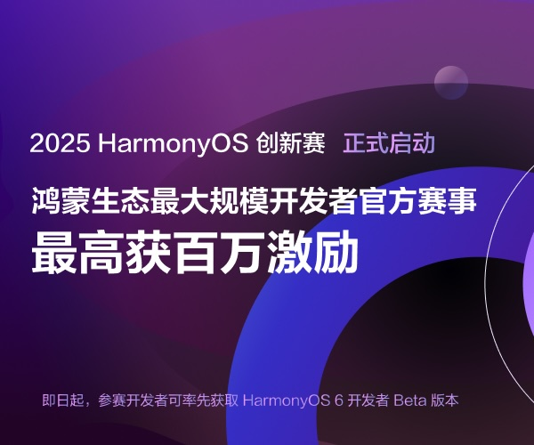

[软件工具使用记录] windows离线ollama部署本地模型并配置continue实现离线代码补全
qwen2.5coder发布之后，觉得差不多可以实现离线模型辅助编程了，所以尝试在公司内网部署模型，配合vsocde插件continue实现代码提示、聊天功能。
目前使用qwen2.5coder的32b模型，体验上和gpt-4o差不多（都稀碎），适用于编写脚本，查一些简单问题，例如flask如何把变量传到前端，准确率还可以，但是补全功能稀碎。
硬件如下：
| cpu | gpu | 内存 |
|---|---|---|
| AMD Ryzen 9 5950X 16核 | AMD Radeon TX 6900XT（需要安装最新驱动）/16G显存直接吃满 | 64G 2600Mhz/实际吃30G内存 |
跑起来不算快，和我阅读速度差不多，对这套硬件来说挺吃力的。GPU没怎么跑，似乎主要是cpu在发力吃到60%占用率
部署ollama
安装ollama客户端 && 选择模型#
首先去Download Ollama on Windows下载ollama的windows版本，安装包非常大，基本上700-800M
在有网络的电脑上安装，然后在Ollama这里找到需要的模型，例如这里我选择qwen2.5code的0.5b模型
点击第二个箭头Tags可以选择不同的量化版本，然后复制第三个箭头的指令
按下Win+R快捷键，运行cmd，执行复制的命令，比如这里是ollama run qwen2.5-coder:0.5b
没有魔法的情况下可能会失败，一般情况下多试几次，最差可能需要几十次才能开始下载
找到模型文件及Modelfile内容#
搜索pull的时候的哈希字符，可以找到模型位置，一般在C:\Users\Administrator\.ollama\models\blobs
按照时间排序，找到最大的那个文件，就是gguf格式的模型，复制出来，改名为qwen2.5-coder0.5b.gguf
在命令行执行形如ollama show qwen2.5-coder:0.5b --modelfile的指令，可以得到模型的Modelfile文件内容，保存为Modelfile文件
现在有以下两个文件
其中，文件内容是默认提示词模板，可参考模型文件参考 - Ollama 中文文档进行修改，例如可以实现让llama3.3优先使用中文，这个可以通过在其中加入请优先使用简体中文回复，这样的字符实现，最好使用翻译软件翻译成英文再放进去（比如插入到第13行）
- 修改第五行的FROM，将模型路径修改为模型的真实路径，例如这里是
./qwen2.5-coder0.5b.gguf
内网部署ollama#
- 在没有网络的内网电脑中安装第一步下载的ollama安装包
- 复制上面准备的两个文件到内网
在两个文件所在目录的地址栏输入cmd，按下回车
命令行中输入ollama create qwen2.5-coder0.5b -f Modelfile，其中create后面是你自定义的模型名字（推荐和外网保持一样）
这样就导入进来了，接下来的使用和外网一模一样，输入ollama list命令可以看到导入的模型
默认情况下ollama会开机启动，如果没有启动，手动执行就行，右下角的托盘图表中应该有它
配置continue
本地使用#
Releases · continuedev/continue这里下载到最新的continue插件，复制到内网，在vscode中安装，可参考VS Code 安装 VSIX 插件_.vsix-CSDN博客
现在，就可以使用模型了
局域网共享#
如果项目组中只有一台电脑能运行模型，别的性能不够，需要局域网访问ollama，那么可以按照如下方式调整
ollama#
默认它的服务监听127.0.0.1:11434端口，这会导致局域网其他机器访问不到，可以参考Allow listening on all local interfaces · Issue #703 · ollama/ollama实现监听所有端口
简单来说，就是设定环境变量OLLAMA_HOST=0.0.0.0，windows上也是一样的，如下
然后重启ollama即可，通过netstat -ano | findstr 11434查看是否监听了0.0.0.0
continue#
可参考：https://github.com/continuedev/continue/issues/1175#issuecomment-2081651169
简单来说，在远程主机上，把设置中的以下内容改为指定内容即可
{
"model": "AUTODETECT",
"title": "Ollama (Remote)",
"completionOptions": {},
"apiBase": "http://192.168.1.100:11434",
"provider": "ollama"
}
其中apiBase就是部署了ollama的机器
 浙公网安备 33010602011771号
浙公网安备 33010602011771号

{kind=link}
{kind=link}
{kind=link}
{kind=link}
{kind=link}
{kind=link}
{kind=link}
【推荐】HarmonyOS 专区 —— 闯入鸿蒙：浪漫、理想与「草台班子」
【推荐】2025 HarmonyOS 鸿蒙创新赛正式启动，百万大奖等你挑战
【推荐】天翼云爆款云主机2核2G限时秒杀，28.8元/年起！立即抢购

· 闯入鸿蒙：浪漫、理想与「草台班子」
· 3天赚2万！开发者的梦想也可以掷地有声！
· Flutter 适配 HarmonyOS 5 开发知识地图
· HEIF：更高质量、更小体积，开启 HarmonyOS 图像新体验
· CodeGenie 的 AI 辅助调优让你问题定位效率大幅提升